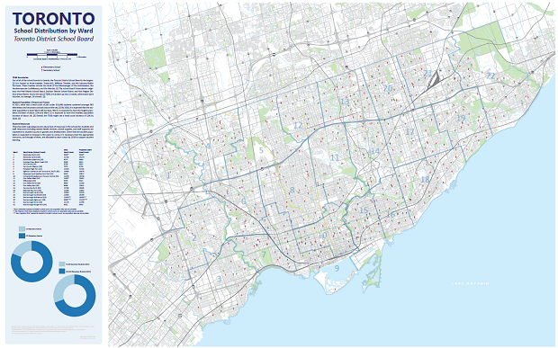
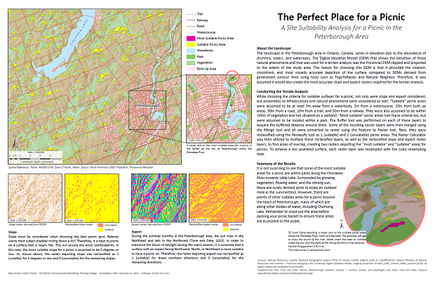
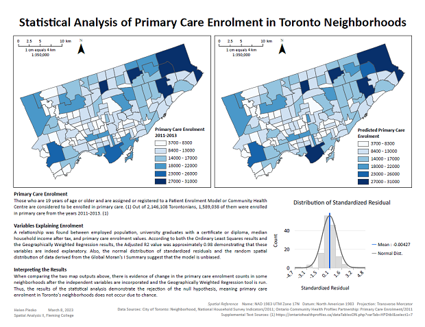
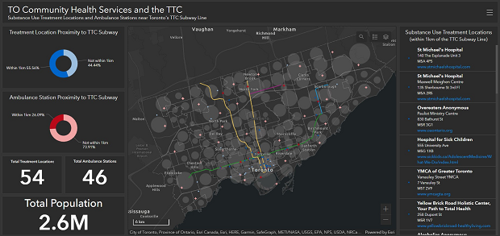
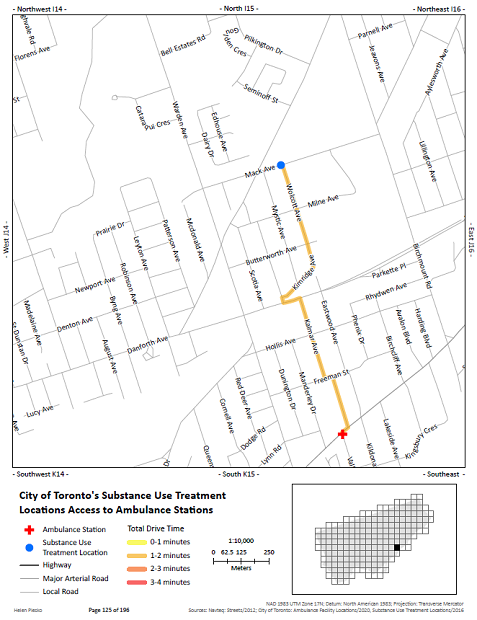
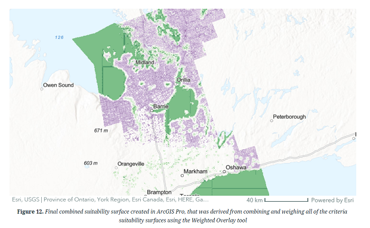

PROJECTS
TDSB SCHOOL DISTRIBUTION BY WARD
Summary of Project:
This cartographic output fulfilled assignment requirements in Geovisualization I. The purpose of this general reference map is to show the distribution of elementary and secondary schools within each ward across the Toronto District School Board (TDSB). The text gives background knowledge of the boundaries, student resources, and current (2021) and projected (2026) student head count.
Skills Demonstrated:
- Utilized various generalization techniques to clean up the road network, waterways, and vegetation.
- Created a visually appealing general reference map in a large format for paper, keeping visual hierarchy in mind.
PICNIC SITE SUITABILITY ANALYSIS
Summary of Project:
This cartographic output fulfilled assignment requirements in Environmental Modelling. For this project, a simple terrain analysis was conducted to find the most suitable areas for a picnic in the Peterborough Area of Ontario. The criteria considered in the analysis were slope, aspect, proximity to infrastructure, and proximity to natural phenomena including parks and vegetation. 3D visualization was added to the cartographic output to provide an additional perspective to one of the most suitable areas for a picnic.
Skills Demonstrated:
- Compared various spatial interpolation methods and created a contour DEM using one that fit best
- Conducted a simple terrain analysis in ArcGIS Pro using the DEM and various ArcGIS Tools
- Created a 3D visualization of an area on the map using ArcGIS Pro's Local Scene
- Created a cartographic output, keeping visual hierarchy in mind
PRIMARY CARE ENROLMENT IN TORONTO
Summary of Project:
This cartographic output fulfilled assignment requirements in Spatial Analysis II. Statistical analysis of Primary Care Enrolment in Toronto, Ontario, was conducted. The variables involved in the analysis were: employed population, university graduates with a certificate or diploma, median household income after tax, and primary care enrolment values.
Skills Demonstrated:
- Gathered reliable open sourced data for conducting the analysis.
- Used Ordinary Least Squares and Geographically Weighted Regression tools to conduct and evaluate the analysis.
- Produced a cartographic output, keeping visual hierarchy in mind
TORONTO HEALTH SERVICES TO THE TTC DASHBOARD
Summary of Project:
This interactive dashboard fulfilled assignment requirements in Spatial Analysis II. This interactive dashboard displays geocoded and linear referenced layers showing the locations of Substance Use Treatment Centres and Ambulance Stations within Toronto, ON, and their proximity to the city's TTC route. The purpose of the dashboard is to highlight these health services that are within 1km of the TTC route, in hope to spread awareness of their locations and accessibility.
Skills Demonstrated:
- Utilized Geocoding and Linear Referencing tools and techniques in ArcGIS Pro to produce neighbourhood, points of interest, and route layers.
- Produced an interactive dashboard on ArcGIS Online, where when zoomed into, the map surrounds change and provides details of the boundaries zoomed to.
HEALTH SERVICES DRIVING TIME NOTEBOOK
Summary of Project:
This ArcGIS Pro Notebook fulfilled assignment requirements in Spatial Analysis II. This ArcGIS Pro Notebook of the City of Toronto shows the proximity of Substance Use Treatment Locations to Ambulance Stations within the city by vehicle. Closest Facility Network Analysis tools were used to find ambulance stations within 4 minute drive time to the substance use treatment centres.
Skills Demonstrated:
- Utilized ArcGIS Pro's Closest Facility Network Analysis tools
- Produced a 196 page Notebook in ArcGIS Pro
SNAPPING TURTLE HABITAT STORY MAP
Summary of Project:
This AGOL story map fulfilled assignment requirements in Spatial Analysis II. To potentially help monitor and protect the snapping turtle species, an analytic hierarchy process (AHP) multi-criteria decision analysis (MCDA) was performed to determine areas most suitable for their habitat. The study area was Central region of Ontario, approximately 22,679 square kilometers in size. The 5 criteria considered in this analysis were Aspect, Land Cover, Distance from Waterbody, Distance from Road, and Distance from Fishing Access Points.
Skills Demonstrated:
- Used an online analytic hierarchy process (AHP) where classmates participated in ranking the criteria to assist in multi-criteria decision analysis (MCDA) prior to making the necessary layers for analysis.
- Created the layers necessary for site suitability analysis in ArcGIS Pro using various tools, including Raster Calculator
- Created a visually appealing and interactive Story Map on AGOL